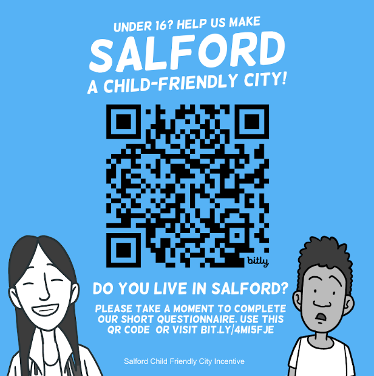
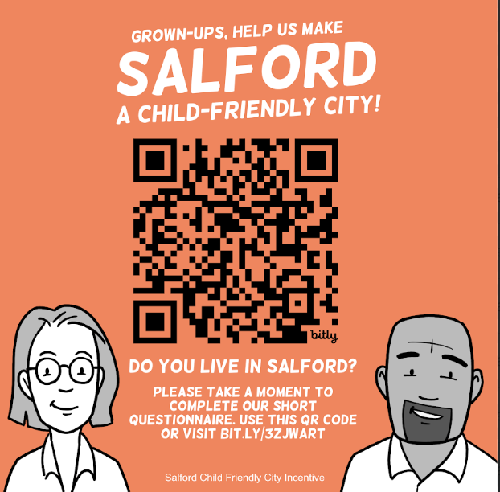
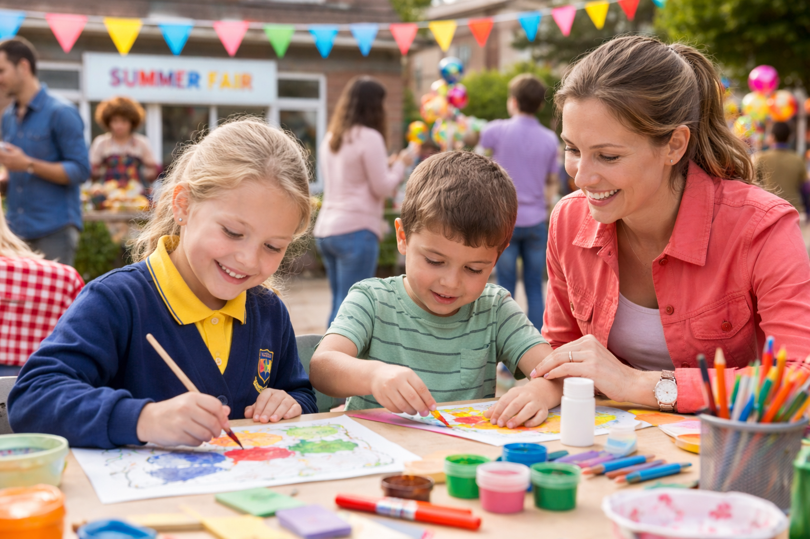

For families
You can find clear information, practical support and opportunities for children, young people and families to take part in Child Friendly Salford and have your voices heard.
Explore family informationWe are working together across Salford to ensure children and young people are at the heart of local decision-making.

You can find clear information, practical support and opportunities for children, young people and families to take part in Child Friendly Salford and have your voices heard.
Explore family information
You can work in partnership with Child Friendly Salford to support children’s rights, share opportunities and help create positive change across the city.
Work with us
You can stay up to date with the latest programme news, community stories and key milestones as Child Friendly Salford continues to develop.
View latest newsWe’ll share programme milestones and stories here. For full updates, visit the News page.
This site is designed to be easy to use and accessible. If you need content in a different format, please contact us.
Contact the teamWe will use simple forms to support involvement and feedback. Forms will be added as the programme expands.
Go to forms